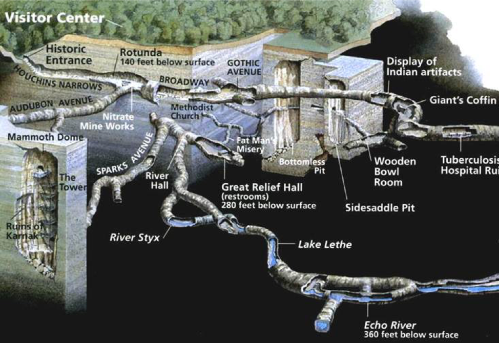

Current events and threats Mammoth Cave faces
When Mammoth Cave National Park was created, only 40 miles of passages were found. It is now 400 miles long, making it the longest cave system in the world. Only 12 miles of Mammoth Cave are suitable to the public. The rest is for spelunkers (cavers) and scientists.
Mammoth Cave National Park now faces a threat: an old underground pipeline full of toxic natural gas liquids flowing near the park. The National Park Service (NPS) is worried about a destructive failure of the pipeline. The pipeline is 70 years old and was designed to carry natural gas, not the liquids it is currently carrying. If the liquids were to spill, they would damage the already threatened species of Mammoth Cave National Park. The NPS recommended four courses of action:
1. Replace the old pipeline with a new pipeline
2. Require intensive liquid flow studies to identify possible harm that could be done to Mammoth Cave and adjoining underground rivers
3. Provide a detailed list of all possible chemicals that could be carried through the pipeline
4. Classify pipeline as hazardous and use hazardous pipeline operation practices.